Assim que acordei e pulei da cama em Durazno, na Hospedaje del Centro, já arrumei as malas, tomei um banho, e desci, retirando a moto da garagem, amarrando tudo naquele ritual que a esta altura já me deixava de saco cheio, e voltei pra estrada.
Na hospedagem não tinha café da manhã, mas eu nem estava com fome, então tomei meu rumo em direção à Colonia del Sacramento. Nesta cidade eu não iria procurar por hotel, mas sim ficar na casa de outro motociclista que me convidou diante da solicitação que fiz no site Couchsurfing. E como estava sendo esperado por lá, não poderia chegar tarde nem perder muito tempo na estrada.
Existem três rotas báscias para chegar de onde eu estava até Colonia, mas por indicação de meu anfitrião fui pela mais longa. Não tão longa, foram 80km a mais pelo que lembro, o que não é muita coisa pra quem roda mais que isso por dia só para ir de casa ao trabalho e voltar, como eu faço. E a estrada estaria em bem melhores condições, sendo que por outras rotas eu passaria por estradas de chão, pelo que entendi.
Outro ponto é que, estando já mais próximo do litoral do Uruguai, as cidades ficam muito próximas umas das outras, poucos quilômetros as separam.
[caption id="attachment_484" align="aligncenter" width="600"]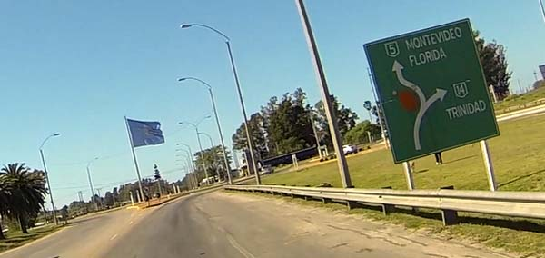 Saindo de Durazno, vamos pra estrada![/caption]
Continuei então descendo pela Ruta 5, passando por Florida. Este foi um dos poucos trechos de estrada que passam por dentro de cidade. E, obviamente, para não perder o costume, me perdi. Parei, olhei GPS no celular, me encontrei mais ou menos, e fui pilotando devagar e seguindo as placas. Sabia que teria que pegar a Ruta 1 em algum momento.
E enquanto eu seguia devagar, uma menina em uma scooter emparelhou comigo, perguntando para onde eu estava indo, e começou a tentar me ensinar o caminho enquanto rodava ao meu lado. A esta altura eu já sabia por onde ir, obviamente, mas achei engraçado, e fomos rodando com ela gritando por dentro do capacete, dizendo que eu deveria pegar a Ruta 1. Pensei em falar para ela encostar e me explicar direito pois não estava entendendo, mas logo ela viu alguns conhecidos em um carro e começou a buzinar para ele, e nos separamos.
[caption id="attachment_489" align="aligncenter" width="600"]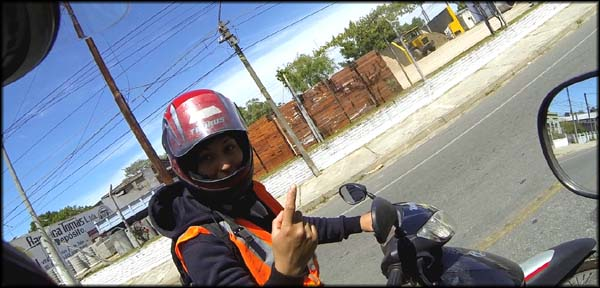 Simpática, agradável e inesperada ajuda. Ruta 1.[/caption]
Continuei na Ruta 5, e depois passei para a Ruta 63, passando por Santa Lucia, e depois San Jose de Mayo. Parei para abastecer (3.505 Km rodados), e quando já saía do posto dei de cara com o Monumento al Motociclista. Eu tinha visto em fotos, mas simplesmente tinha esquecido onde era, já nem procurava. Foi uma boa surpresa.
[caption id="attachment_482" align="aligncenter" width="600"]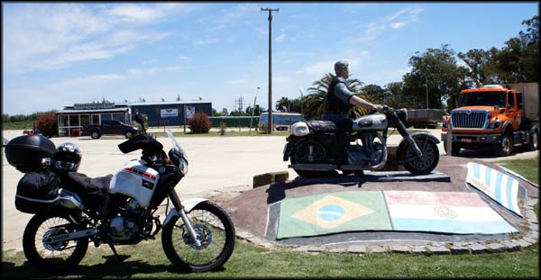 Monumento ao Motociclista[/caption]
[caption id="attachment_483" align="aligncenter" width="600"]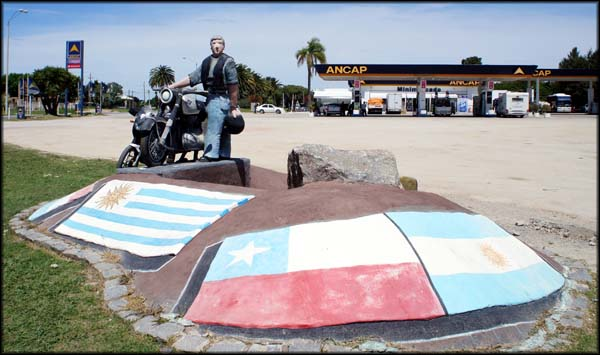 As motos são queridas no Uruguai[/caption]
Trata-se de uma estátua de um motociclista e sua motoca, que fica sobre um platô de concreto onde estão pintadas as bandeiras dos países da América do Sul. Bem legal. Tirei umas fotos, e segui meu rumo pela Ruta 11, até chegar no entroncamento com a Ruta 1, e passei a seguir por ela.
Estava um pouco frio, mas não a ponto de desanimar. O sol estava forte, e ajudava muito, mas quando eu passava por áreas de sombra na estrada, provocada pelas árvores, esfriava bem, e eu acelerava para voltar logo para o sol.
[caption id="attachment_491" align="aligncenter" width="600"]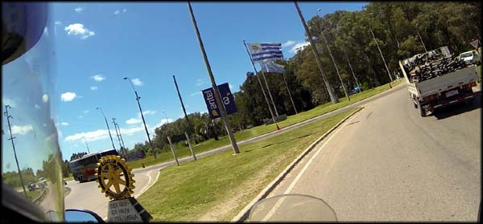 No sol estava um frio excelente pra pilotar[/caption]
A estrada em si não guardou muitas novidades na paisagem, e eu fiz umas paradas a mais que o habitual. Acho que o cansaço acumulado desses dias de viagens, incertezas e horas procurando saber onde eu estava, finalmente estavam pesando. Tive vontade de parar no primeiro hotel que visse, descansar e só levantar no dia seguinte. Mas já estava sendo esperado em Colonia del Sacramento.
Cheguei, finalmente, na entrada de Colonia, que é um longo trecho de estrada ladeada por lindas árvores alinhadas. Assim que percebi as primeiras casas parei de novo, procurando o endereço para onde ir no mapa do celular.
[caption id="attachment_486" align="aligncenter" width="600"]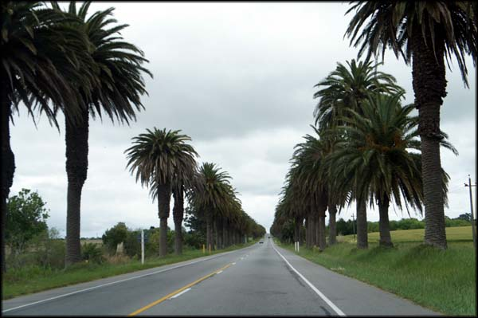 A estrada para Colonia del Sacramento[/caption]
Me encontrei, e consegui chegar no endereço de minha próxima hospedagem, a casa de Israel e família. Demorei mais que o esperado nesse ritmo arrastado do dia, e meu anfitrião, Israel, bem como seu pai, mãe e seu amigo Hugo já me esperavam na porta de casa. Fiquei um pouco constrangido, espero que tenha sido coincidência toda a família na porta me esperando, sabe lá quanto tempo ficaram lá.
Fui muito bem recebido por todos na casa, onde moram Israel, seu pai, sua mãe, seu avô, e sua irmã Shakira. Todos muito simpáticos, mas foi só o tempo de eu jogar os alforges dentro da casa e os novos amigos já propuseram uma volta na cidade para eu conhecê-la. Foi tudo tão rápido que ate esqueci de levar a Gopro para filmar os lugares (para os quais voltei no dia seguinte na maioria, para assim fazê-lo).
[caption id="attachment_488" align="aligncenter" width="600"]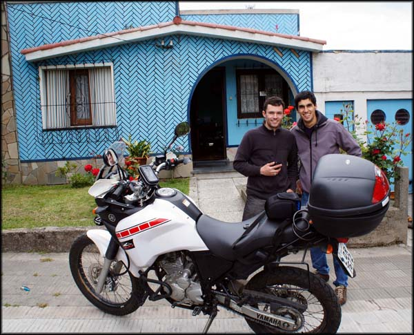 Israel e Hugo, pessoal bacana toda vida[/caption]
A cidade é muito legal, preserva em boa parte aquele clima de cidade antiga com todos os sinais da colonização e da disputa que a envolveu, entre Portugal e Espanha. Vale muito a visita.
Interessante também a quantidade de carros bem antigos usados pelo pessoal. Não que inexistam carros novos, mas a frota de veículos tem uma média de idade razoável. Percebi que os uruguaios não se apegam muito ao clima de ostentação que prevalece no Brasil, de querer sempre o melhor carro, o mais novo e mais caro. Sou bem pouco brasileiro nisso, carro pra mim é meio de locomoção.
A mãe de Israel me falou sobre os carros antigos, e disse que eles haviam comprado um um pouco mais novo e estavam vendendo o mais rodado. Um carrinho vermelho (não sei modelo) com o qual eles pegavam a estrada tranquilamente até Montevidéu.
Fui na calçada da casa vizinha, onde havia uns três carros bem antigos, muito bacanas. Quando tirava fotos, o dono da casa surgiu, e me deu um susto. Pensei que ele fosse brigar comigo, sei lá porquê, mas ele perguntou se eu estava interessado no carro, se queria comprar. Ri, e disse que talvez, se pudesse ir com ele de volta para o Brasil. Ele me garantiu que era só colocar gasolina.
[caption id="attachment_467" align="aligncenter" width="500"]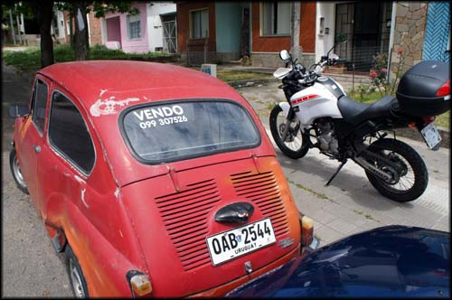 Simpático carro da simpática família que me recebeu[/caption]
[caption id="attachment_468" align="aligncenter" width="500"]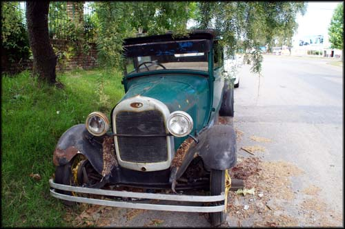 Esse é um dos carros do vizinho, queria me vender rsrs[/caption]
Fizemos um passeio completo pelas margens do Rio da Prata, e alguns pontos de observação das praias não acessíveis a turistas tradicionais. Parte ótima de viajar de moto, e ainda por cima com guias locais.
Rodamos por toda a Rambla de las Americas ("rambla" é orla, aprendi!). Alguns turistas passeando em carrinhos elétricos alugados, daqueles que se usa em campos de golf. A polícia local, com um radar de velocidade, controlando o tráfego, mas nem precisava, os motoristas de Colonia são bem calmos e o trânsito muito leve.
Parei pra tirar foto de uma espécie de motorhome sinistro. Um caminhão, com toda estrutura para acampar, e de brinde uma moto BMW que fica presa a um elevador, usada para passeios locais... que sonho!
[caption id="attachment_472" align="aligncenter" width="600"]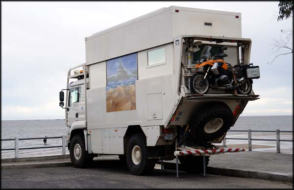 Assim é mole viajar de moto...[/caption]
Fomos até a Plaza de Toros, onde eram realizadas touradas (funcionou por apenas dois anos, ainda bem, pois pouco após sua construção as touradas passaram a ser proibidas no país), restando hoje apenas ruínas, e uma placa de “proibida a entrada, perigo de desabamento”.
[caption id="attachment_471" align="aligncenter" width="500"]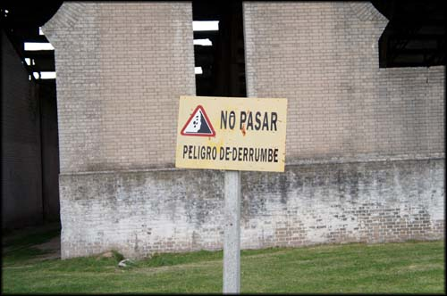 A placa alerta para o perigo de desabamento. Bem, eu tinha um capacete, estava seguro.[/caption]
Israel me perguntou se eu queria entrar para conhecer. Perguntei se não tinha problema, já que era cercado e havia placa de proibição. Entramos por um buraco aberto na cerca, e pude conhecer a estrutura por dentro, onde existem várias pichações de protesto, e pude tirar fotos. Esse é o lado bom de conhecer a cidade acompanhado de quem vive nela. Sozinho jamais que eu entraria ali.
[caption id="attachment_473" align="aligncenter" width="500"]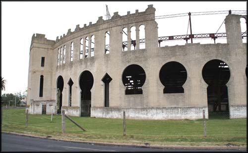 A Plaza de Toros em Colonia del Sacramento[/caption]
[caption id="attachment_474" align="aligncenter" width="600"]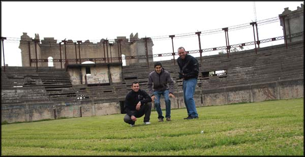 Vista de dentro, Israel, Hugo e eu[/caption]
[caption id="attachment_475" align="aligncenter" width="500"]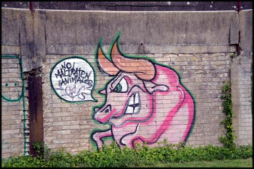 No Maltraten Animales![/caption]
Voltamos a rodar, passamos por vários lugares, e depois foi a hora do tour no centro histórico, onde estão as ruínas da antiga fortaleza, única entrada que havia na cidade durante a disputas bélicas do passado; o farol, onde pudemos subir incontáveis degraus até o topo, guardava uma bela vista; as casas bem antigas, algumas com arquitetura no estilo português, outras no estilo espanhol, na Rua dos Suspiros.
[caption id="attachment_476" align="aligncenter" width="600"]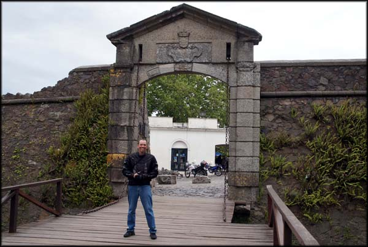 Portal, durante uma época, única entrada de Colonia del Sacramento[/caption]
[caption id="attachment_477" align="aligncenter" width="400"]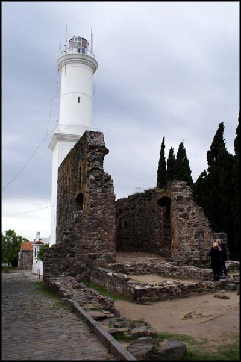 Farol em Colonia[/caption]
[caption id="attachment_478" align="aligncenter" width="500"]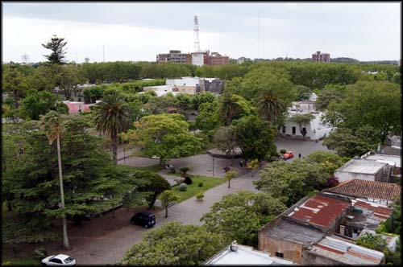 A vista de cima, parte turística, estava vazia[/caption]
Na região existem muitos restaurantes e bares, um clima bem legal, bem de cidade turística de interior mesmo.
[caption id="attachment_480" align="aligncenter" width="500"]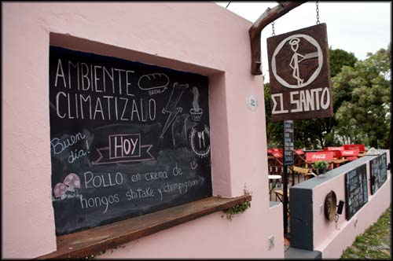 Restaurantes simpáticos[/caption]
[caption id="attachment_481" align="aligncenter" width="600"]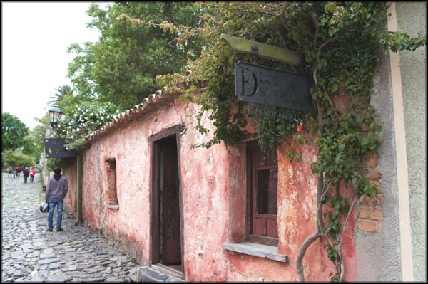 Calle de los Suspiros - Rua dos Suspiros[/caption]
Quanto ao nome da Rua dos Suspiros, me contaram três versões sobre sua origem. Uma porque seria uma área de prostituição, e derivou dessas sonoplastias de prazer. Outra porque, no fim da rua, já às margens do rio, haveria uma forca onde eram pendurados condenados por crimes. E outra que esqueci. Ora ora...
Já saindo da cidade, fomos visitar uns lagos e piscinas naturais onde a galera local vai mergulhar e passar os dias de sol no verão; e uma espécie de museu com uma coleção impressionante de chaveiros, cinzeiros e lápis do mundo todo. Era uma coleção particular aberta a visitação, e um dos orgulhos do dono era ter visitado a fábrica da Faber Castel.
[caption id="attachment_469" align="aligncenter" width="500"]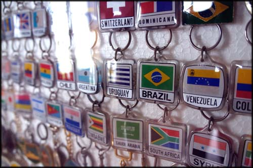 Coleção de chaveiros e lápis, dentre outra coisas[/caption]
[caption id="attachment_470" align="aligncenter" width="600"]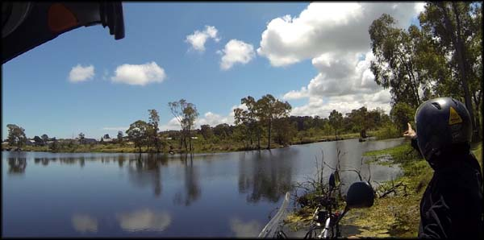 Lago natural perto de Colonia, no verão deve ser animado[/caption]
Começou a escurecer, e voltamos para a casa de Israel. No caminho fomos comprar pizza frita, muito boa. A massa me lembra a desses “sonhos” que as padarias fazem no Brasil (ao menos no Rio se chama assim), mas sem o recheio doce. Lanchamos e ficamos conversando com a família que me hospedava.
[caption id="attachment_487" align="aligncenter" width="500"]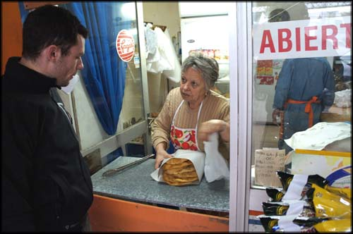 Comprando o lanche, muito bom[/caption]
Me perguntaram sobre alguns canais de motovlog no Youtube feito por brasileiros e vimos alguns vídeos, rindo bastante. Hugo infelizmente teve que ir embora, gente boa.
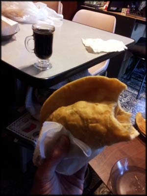À noite, meu anfitrião me pediu se poderia ajudá-lo a fazer uma entrega em uma cidade vizinha. Não tinha entendido exatamente com o que ele trabalhava, então fui descobrir. Fomos no carro dele, uma Saveiro, até sua loja, que ficava na rua comercial de Colonia del Sacramento.
É um comércio que vende equipamentos industriais de cozinha, como refrigeradores/expositores, fogões industriais, essas coisas. Carregamos na pick-up um expositor para frios, e pegamos a estrada até uma cidade próxima (acho que era Juan Lacaze, nem sei mais).
[caption id="attachment_494" align="aligncenter" width="400"]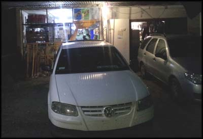 Fazendo entrega do refrigerador, meu emprego estava garantido[/caption]
Fizemos a entrega e instalação do equipamento em uma pequena mercearia, onde trabalhava uma família, muito engraçada. O coroa dono do estabelecimento ficou me sacaneando dizendo que eu já poderia morar no Uruguai pois estava empregado. Ele estava empolgado com a aquisição do novo equipamento, pois esperava aumentar muito as vendas no verão seguinte.
Depois fomos em um bar próximo dali, de um amigo do Israel, para beber umas cervejas e jogar sinuca. Não lembro bem, mas acho que ganhei as três partidas que jogamos. E como meu adversário não vai poder desmentir isso aqui, fica como verdade.
[caption id="attachment_485" align="aligncenter" width="600"]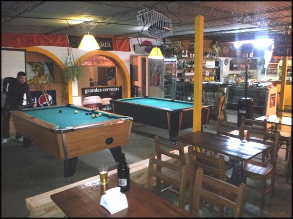 Sinuca e cerveja. Jogo muito![/caption]
Voltamos para Colonia, e ainda pude conhecer o Barbot, um bar legal que vende cervejas artesanais, coisa que já e febre no Rio de Janeiro e gosto muito. Experimentei lá as cervejas deles, achei bacana, mas já era meio que fim de noite e o bar foi ficando vazio... é, não ia ser dessa vez que eu faria uma noitada fora do BR.
[caption id="attachment_466" align="aligncenter" width="600"]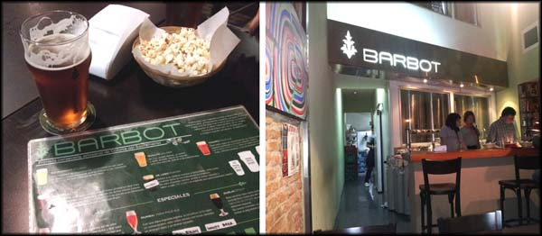 Barzinho descolado, pena que fechou cedo[/caption]
Provavelmente, devido à ajuda dos meus novos amigos guias, foi o dia mais produtivo da viagem, porque não precisei ficar perdido, pedindo informações. Obviamente, sabia onde estava, e recebia explicação para o que significava cada lugar visitado.
Chegamos em casa tarde da noite, mas o pai de Israel ainda estava acordado. Olhou pra minha cara e disse algo como "você parece estar com fome". Imagino a cara que eu estava. Foi pra cozinha e fez uma massa ao molho branco, apesar de eu ter insistido que não precisava. Estava delicioso, comi até não aguentar mais.
Depois de toda essa andança e comilança, só me restou dormir um pouco e recuperar o fôlego para o dia seguinte. Ainda queria curtir um pouco mais a cidade de Colonia del Sacramento durante o dia, e depois partiria para Montevidéu.
---------- Comentários são bem vindos, inclusive dúvidas que eu saiba responder. Por questão de organização, comentários sobre a viagem ao Uruguai estarão concentrados no primeiro artigo que pode ser acessado aqui: Viagem de Moto do Rio ao Uruguai. Obrigado pela visita !